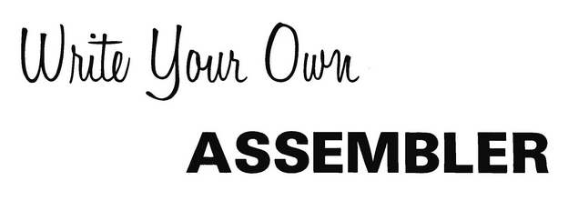

Drifblim is strong enough to lift Pokemon or people but has no control over its flight. This causes it to drift with the wind and end up anywhere.
Drifblim is a Uxntal assembler, written in Uxntal.
The assembler is written in Uxntal itself, and is designed to help bootstrap the Uxntal ecosystem, it outputs a symbols file and expects the standard Uxntal Notation. Here are the limits of the implementation:
- Limit of 48 bytes per token and scope.
- Maximum nesting depth of 255 for lambdas.
- Only one include per file, must be last token of file.
Boostrapping
Since the assembler is written in the language it is assembling, you have a few choices:
- Download a pre-assembled rom.
- Assemble your own with the live REPL.
- Bootstrap from a hexdump.
If you are unable to assemble your own copy of drifblim, lost its source file, or simply want to make sure that the assembler is unaltered, you will need the hexadecimal data of drifblim.rom. Here are some inspectable tools to help with the bootstrapping process on non-unix systems:
Step 0: xh.rom
If for some reason you do not have access to the unix xxd command, you can convert hexadecimal dump to a rom with the xh program, which reads a console stream of text and output the actual bytes through the console. This step expects a way to manually create a binary file, but not having a convenient way of creating large files manually.
a001 0780 1037 0080 1216 8030 1906 800a 0b20 000c 8027 1906 8010 0b20 0002 0200 c040 5ecf 2000 051d 8018 1700 cf1f
cat drifblim.rom.txt | uxncli xh.rom > drifblim.rom
Step 1: cat.rom
If for some reason you do not have access to the unix cat program, you can read files and output their content through the console with the cat program, which reads a file and outputs the content via the console.
a001 0780 1037 0080 1216 0680 1f0a 2000 1502 6000 1aa0 000f 13a0 0317 1608 2000 04a0 800f 1700 a000 0081 80fb 1331 00a0 0000 80a8 37a0 0001 80aa 37a0 014b 80ac b780 a316 2000 0302 226c a000 1817 40ff ef
uxncli cat.rom drifblim.rom.txt | uxncli xh.rom > drifblim.rom
Step 2: drifboot.rom
At this point, you have recovered your own drifblim.rom from a hex dump. The next step is to make a new drifblim.rom from its source code, using the newly assembled rom.
uxncli drifblim.rom drifblim.tal.txt drifboot.rom
Note that in Uxntal, hexadecimal numbers are valid code and so any rom can be recovered from a hex dump with a working assembler.
Step 3: hx.rom
To close the circle, the assembled rom needs to turned back into a hex dump, we'll print its hex dump using a the following utility:
@on-reset ( -> )
;on-console #10 DEO2 BRK
@on-console ( -> )
#0417 DEI NEQ [ JMP BRK ]
#12 DEI DUP #04 SFT emit emit INC
@spacer ( c -> )
DUP #0f AND ?{ #0a18 DEO BRK }
DUP #01 AND ?{ #2018 DEO } BRK
@emit ( c -- )
#0f AND DUP #09 GTH #27 MUL ADD
LIT "0 ADD #18 DEO JMP2r
uxncli drifblim.rom hx.tal.txt hx.rom cat drifboot.rom | uxncli hx.rom > drifboot.rom.txt
Step 4: eq.rom
Finally, we should have two identical hex dumps of the assembler, where one was assembled from the textual source. If for some reason you do not have access to the unix diff command, you can compare the two hexadecimal dumps with the eq program, which takes two filepaths and compare their content.
uxncli drifblim.rom eq.tal.txt eq.rom uxncli eq.rom drifblim.rom.txt drifboot.rom.txt
Alternatively, if your Varvara implementation does not support the File device, use the Drifloon assembler(tal/rom). To validate your own assembler, see the tests, and disassemble the result with uxndis.
incoming symbols uxntal software oscean uxntal devlog